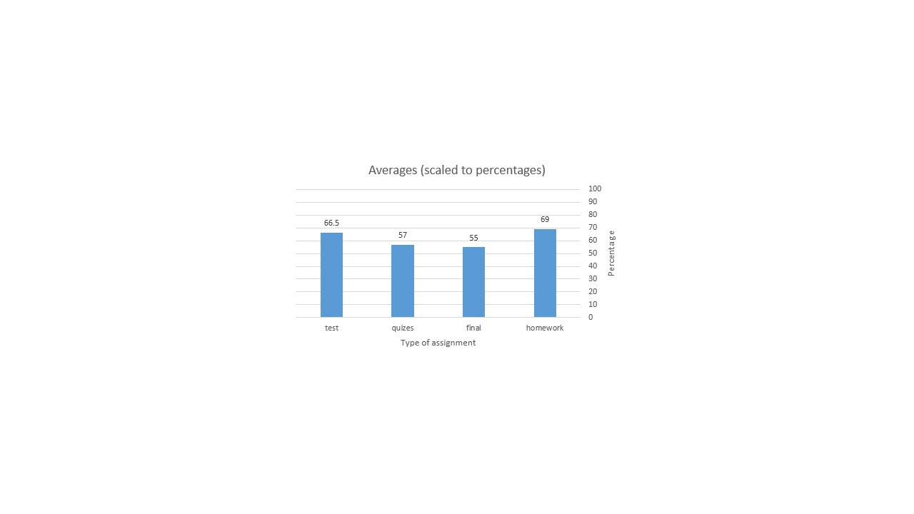

In this graph, I collected the data from the first penguin in the dataset and I calculated the average for all different assignments (i.e homework,quizes, tests, and final.) To be able to put all of them in one histogram, I scaled all the averages into percentages instead of definite grades.
